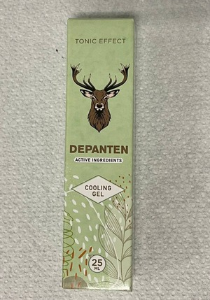

“Latvijas pieeja locītavu terapijai ir vienkārši mulsinoša.” Slavenais
eksperts reimatoloģijas sniedza atklātu interviju latviešu medijiem.
Pauls Dambis eksperts reimatoloģijā:
Locītavu slimības izraisa viena lieta, ko latviešu speciālisti
pilnībā ignorē.
Pauls Dambis: “Latvijā locītavu
slimības joprojām tiek ārstētas ar novecojušām un neefektīvām
zālēm, kas prasa nepārtrauktu lietošanu visu mūžu. Atrodoties
Eiropā, locītavas tiek ārstētas tikpat viegli kā saaukstēšanās”.
Pagājušajā gadā Pauls Dambis apmeklēja
Latvijā, lai iepazītos ar kolēģu pieredzi. To, ko viņš tur redzēja,
pēc viņa teiktā, ir ļoti grūti izskaidrot. Pauls Dambis atzīst, ka
mūsu valstī reimatoloģijas zinātne ir iestrēgusi pagājušā gadsimta
līmenī.
Pēc augsta līmeņa konferencēm Latvijā, Pauls
Briedis piekrita sniegt interviju latviešu medijam. Kas slavenajam
ekspertam nepatīk latviešu medicīnas pieejā un kāpēc viņš apgalvo,
ka LATVIEŠU pacienti ar locītavu problēmām vairs nekad nekļūs
veseli?
– Atbildot uz žurnālistu jautājumiem, jūs
teicāt, ka esat šokēts par Latvijā redzēto. Vai jūs, lūdzu,
varētu komentēt, kāpēc?
– Vispirms es vēlos teikt, ka man nav nekas
pret Latviju, latviešu kultūru vai cilvēkiem. Tomēr veselības aprūpe
jūsu valstī ir patiešām šokējoša. Tā atpaliek vismaz par 20 un,
iespējams, par 30 gadiem. Vismaz, ja runa ir par locītavu un muskuļu
un skeleta sistēmas slimību ārstēšanu. Var teikt, ka reimatoloģija
kā zinātne Latvijā nepastāv.
Lūk, ko Latvijas speciālisti iesaka locītavu
terapijai – Viprosal, Dolgit, Voltaren/Fastum gel, Diclofenac,
Teraflex, Nurofen un citas līdzīgas zāles.
Taču šīs zāles neārstē LOCĪTAVAS UN
SKRIMŠĻUS, tās tikai mazina simptomus – sāpes, iekaisumu, pietūkumu.
Tagad uzminiet, kas notiek ķermeņa iekšienē. Kad iedzeram tableti,
uzziežam anestēzijas gelu vai saņemam injekciju, sāpes pāriet. Bet,
tiklīdz zāļu iedarbība beidzas, sāpes nekavējoties atjaunojas.
Sāpes ir svarīgs signāls, kas norāda uz
patoloģiskiem procesiem locītavās. Ja mēs tikai nomierinām sāpes,
skartās locītavas tiek pakļautas vēl lielākam destruktīvam procesam.
Tās bojājas 3-5 reizes ātrāk, un tas galu galā noved pie
neatgriezeniskām izmaiņām un pilnīgas imobilizācijas un
invaliditātes.
Eiropā šādu pieeju locītavu sāpēm vairs
neizmanto vairāk nekā 20 gadus. Pretsāpju līdzekļus lieto tikai
ārkārtas gadījumos, ļoti precīzi un akurāti. Latvijā tos pārdod
tikai ar recepti un stingrā kontrolē.
Tā sauktie “hondroprotektori” visi ir
aizliegti, jo tās ir bezjēdzīgas zāles un nekas cits kā krāpšana.
Jūsu speciālisti un farmaceiti vienkārši
padara cilvēkus par invalīdiem! Ir skaidrs, ka pārdot dārgus
pretsāpju līdzekļus, kas novērš simptomus, ir daudz izdevīgāk, nekā
vienreiz un uz visiem laikiem izārstēt slimību, tādējādi atjaunojot
bojāto locītavu. Bet kā gan viņi varētu uzdrošināties to darīt!
– Kāda ir locītavu ārstēšanas situācija
Latvijā?
– Visi speciālisti, reimatologi, ģimenes
speciālisti un paramediķi jau sen zina, ka, lai izārstētu slimību,
ir jārīkojas nevis novēršot sekas, bet gan cēloņus. Tā ir pilnīgas,
ātras un drošas atveseļošanās garantija. Un kāds ir galvenais
locītavu problēmu cēlonis? Ortosāļu uzkrāšanās asinsrites traucējumu
un sinoviālā šķidruma cirkulācijas problēmu dēļ.
Urāti ir patiesais urīnskābes sāls, podagras
cēlonis.
Osteofīti, jeb kalcinētie sāļi izraisa
atlikušos 97% locītavu un mugurkaula slimību. Tie ir visu veidu
artrīts un osteoartrīts, DDD, osteoporoze, reimatisms, bursīts un
pat higroma. Visām šīm slimībām ir viens cēlonis – osteofītu
nogulsnes.
Sāļi uzkrājas uz locītavas virsmas un kā
smilšpapīrs noslīpē apkārtējos audus, t.i., kaulus un skrimšļus.
Augošie sāls kristāli traumē muskuļu audus, cīpslas, asinsvadus un
kapilārus. Tādējādi izraisot iekaisumu, infekciju, pietūkumu un
stipras sāpes.
Smagākos gadījumos lielas ortosāļu kopas pēc
pēkšņas kustības var viegli nolauzt kādu kaula daļu, tādējādi
izraisot pilnīgu invaliditāti un neatgriezenisku locītavas
imobilizāciju.
Ir ļoti maldīgi uzskatīt, ka kalcijs ir labs
locītavām. Jā, kalcijs ir labs, bet tikai tad, ja jums ir
VESELAS locītavas. Kad locītavas sāp vai plaisā, tas
nozīmē, ka ap tām jau ir izveidojies osteofītu slānis. Kalcijs ne
tikai stiprina kaulu audus, bet arī stiprina osteofītu sāļus,
tādējādi pastiprinot un paātrinot to augšanu.
Tāpēc reimatologi vispirms atjauno asinsriti
slimības skartajā locītavā, lai attīrītu to no gadu gaitā
uzkrātajiem ortosāļiem. Tas savukārt atjauno normālu sinoviālā
šķidruma cirkulāciju un iedarbina locītavu audu atveseļošanās
procesu.
Kalcinoze Bojāta un iekaisusi locītava Sāls kristāli Orto-sāls
‘vairošanās’ uz locītavu virsmām – visu patoloģisko izmaiņu
galvenais cēlonis
Diezgan savādi, ka
locītavas var ļoti labi atjaunoties, tās spēj pašas atgūties, kā
ķirzaka ataudzē asti. Tām ir vajadzīga tikai neliela palīdzība, lai
notīrītu orto-sāls nogulsnes, un process sāksies pats par sevi.
Vēl pagājušā gadsimta 90. gados Šveices
zinātnieki spēja izstrādāt īpašu formulu. Viņi apvienoja dabiskas
sastāvdaļas, piemēram, kalnu arnikas ekstraktu, mentolu, kampara
eļļu un eikalipta ēterisko eļļu..
Šī formula spēj iekļūt ortosāļu molekulās un
izvadīt tās no iekšpuses, kā rezultātā tiek iegūta tīrāka locītavu
virsma, atjaunota asinsrite un sinoviālā šķidruma cirkulācija.
Efekts ir NOTURĪGS! Vai drīzāk, līdz sāļi atkal sakrājas (bet tas
prasīs vairākus gadu desmitus). Vairs nav nepieciešams pastāvīgi
lietot zāles, lai atbrīvotos no sāpēm un iekaisuma. Nav jābaidās, ka
kādu dienu jūsu locītava var “iestrēgt” uz visiem laikiem un ka jums
tiks pilnībā liegta mobilitāte un būs nepieciešama protezēšana.
Cilvēki kļūst pilnīgi veseli un paliek tādi gadu desmitiem.
Kad es iepazinos ar Latvijas medicīnas
statistiku, man mati cēlās stāvus. Vai jūs zināt, kāds ir
visizplatītākais invaliditātes cēlonis Latvijā? Tas nav ne vēzis, ne
AIDS vai diabēts, tas ir osteoartrīts! Kamēr Latvijā ar ne pārāk
dārgām zālēm osteoartrītu ārstē 4-6 nedēļu laikā, tad Latvijā tas
noved pie invaliditātes!
Mūsdienās Latvijā slimības, kas skar
locītavas, netiek uzskatītas par bīstamām. Es nerunāju par smagām
traumatiskām traumām: lūzumiem, kaulu saspiešanu, plīsumiem utt.
Sāpīgas un iekaisušas locītavas liecina tikai par to “piesārņojumu”
ar sāļiem, un tām ir nepieciešama attīrīšana. Pēc 4-6 nedēļu ilga
“attīrīšanas” kursa locītavas atgriežas normālā stāvoklī un
problēmas var aizmirst uz nākamo desmitgadi.
Locītavu slimības, kuras Latvijas iedzīvotāji
cenšas “ārstēt” atsevišķi no citām slimībām, Eiropā jau sen ir
apvienotas vienā slimības klasē, ko sauc par locītavu kalcinozi.
Šajā grupā ir iekļauta:
Podagra
Artrīts
Osteoartrīts
Deģeneratīvas Disku Slimības
Reimatisms
Osteoporoze
Bursīts
Sinovīts
Higroma
Šis ir ļoti īss saraksts, bet citas slimības
ir tikai apakšklases no galvenajām deviņām iepriekš uzskaitītajām
slimībām. Piemēram, koksartroze ir osteoartrīta paveids, utt.
Visu šo garo slimību sarakstu var izārstēt
ļoti vienkārši, veicot vienkāršu locītavu attīrīšanu. Tas ir
absolūti drošs veids, kas neprasa medicīnisku uzraudzību, un to var
veikt mājās.
– Kā jūs “attīrat” locītavas Latvijā?
– Mūsdienās ir īpaši preparāti, kas paredzēti
locītavu attīrīšanai no sāls nogulsnēm. Tie satur alfa-artroferolu.
Piemēram, ļoti labs zīmols ir . Tas satur
alfa-artroferolu
tā īpašajā, viegli uzsūcošajā formā, kas padara šo zīmolu ļoti
efektīvu.
Vēl viens svarīgs efekts ir tas, ka
tas satur sistēmisku artrovitamīnu un mikroelementu kompleksu, kas
paredzēts locītavu audu darbības uzlabošanai. Tas nozīmē, ka tiek
nodrošināta pienācīga, ārstnieciska iedarbība uz kaulu un skrimšļa
audiem, sinoviālo šķidrumu, muskuļu šķiedrām, saitēm un cīpslām.
Citiem vārdiem sakot, tā ir visaptveroša un plaša spektra darbība.
– pirmais produkts
Latvijā, kura sastāvā ir 2 patentēti bio
komponenti, kas mērķtiecīgi iedarbojas uz
locītavu slimību iemesliem. Komponentu
efektivitāti pierādīja klīniskie pierādījumu gan Latvijā, gan
ārzemēs.
ARNIKA MONTANA
EKSTRAKTAS — turi priešuždegiminių ir analgetinių
savybių. Jis taip pat turi antiseptinį ir vazoprotekcinį
poveikį.
EUKALYPTUS ETERINIS
ALIEJUS — turi antiseptinių ir priešuždegiminių
savybių, nes jame yra cineolio. Jis taip pat stabdo
bakterijų augimą ir turi vėsinantį poveikį odai ir
gleivinėms.
– Cik man zināms, Latvijas
aptiekās nepārdod?
– Patiesībā nē. Latvijas speciālisti dod
priekšroku “piebarot” cilvēkus ar pretsāpju līdzekļiem un
hondroprotektoriem, nevis tos ārstēt.
Tajā pašā laikā, bez šaubām, latviešu
reimatologi, vismaz tie, kas interesējas par progresīvām terapijām,
neapšaubāmi ir informēti par un tā atjaunojošajām
īpašībām.
Bet viņi neuzdrošinās izrakstīt zāles, kas nav Latvijas ieteicamo
zāļu sarakstā.
Cik man zināms, ražotājs vēlējās
iekļūt Latvijas tirgū, taču viņam to neļāva simtiem mākslīgu šķēršļu
dēļ (Latvijas birokrātija ir ļoti spēcīga). Tas ir saprotams, ja šīs
zāles nonāks aptieku plauktos, Latvijas farmācijas mafija cietīs
milzīgus zaudējumus. Galu galā medikamentu rūpniecība vispirms ir
bizness! Pat Eiropā. Bet Eiropā šo nozari kontrolē valdība.
– Ko jūs ieteiktu Latvijas cilvēkiem,
kuriem sāp locītavas?
– Parastie cilvēki, īpaši tie, kam ir vairāk
nekā 50 gadu, ir pirmie, kas cieš no veco laiku latviešu medicīnas.
Tā nav viņu vaina, tā darbojas veselības aprūpe.
Bet, par laimi, ir izeja. Mūsu laikraksts ir
vienojies ar Ortopēdijas un reimatoloģijas universitāti un Latvijas
pastu par iespēju izplatīt zāles ar atlaidi visiem Latvijas
pilsoņiem, kuriem ir locītavu problēmas. Universitātes darbinieki
izveidoja īpašu izplatīšanas centru, un mēs nodrošinājām zāļu
partiju. Tāpēc šobrīd ikviens Latvijas iedzīvotājs var pasūtīt
par
simbolisku cenu ar bezmaksas piegādi visā valstī.
Tagad es jums pastāstīšu, kas jums jādara,
lai iegūtu .
Ievērojiet zemāk norādītos soļus:
Lai iegūtu , aizpildiet oficiālo
pieteikuma veidlapu,
kas pieejama raksta beigās;
Atbildiet uz menedžera zvanu, kurš ar prieku atbildēs uz jūsu
jautājumiem. Viņš arī apstiprinās piegādes adresi;
Saņemiet paciņu pasta nodaļā pēc 5-7 dienām.
akcija noritēs 2
mēnešus. Tūkstošiem
latviešu jau ir izmantojuši šo iespēju. Ikviens, kurš ieguva
, tiek
lūgts novērtēt produkta efektivitāti skalā no 1 līdz
10. Līdz šodienai aptaujā piedalījās vairāk nekā 3000 cilvēku un
zīmolam piešķirtais vidējais vērtējums ir 9.97 no 10.
Kā redzat, palīdzēja atgūt
mobilitāti un atbrīvoties no sāpēm tūkstošiem Latvijas pilsoņu, un
jūs varat būt viens no viņiem.
– Cik ilgi to varēs iegādāties?
– Tik ilgi, kamēr pietiks krājumi. Pasūtījumi
birst kā no pārpilnības raga. No mutes mutē cilvēki viens otram
nodod informāciju, iesaka draugiem. Viņi cenšas to pasūtīt radiem
vai draugiem. Neviens nevarēja paredzēt, ka informācija par
izplatīsies tik ātri.
Kopš
prece pieejama
par īpašo cenu:
23 gab.
Komentāri
Līvija Saule
Paldies. Ļoti noderīgi!
Man bija jāmaksā privātā klīnikā par
injekciju kursu. Es pasūtīju , kamēr tas joprojām
ir
pieejams par īpašo cenu. Menedžeris teica, ka tas joprojām ir
pieejams, taču viņiem ir daudz pasūtījumu. Esmu priecīga, ka
uzzināju par šo iespēju.
Viktorija Lapa
Esmu viena no laimīgajām,
kurai izdevās izmēģināt . Tas tiešām ir
labākais
līdzeklis. Man bija osteoartrīts pirms 7 gadiem, tā bija īsta
katastrofa. Biju gatava visu atlikušo mūžu lietot tabletes un
injekcijas, taču galu galā pēc kursa sāpes ir
pārgājušas. Pilnīgi pārgājušas. Iesaku visiem – palīdz!
Miks Kalniņš
Man ir 63 gadi. Man sāp
ceļi kopš 53 gadu vecuma. Nesen sāpes kļuva nepanesamas. Draugs
speciālists (mēs esam draugi kopš bērnības) man pastāstīja par
šo programmu un pirms 3 mēnešiem ieteica iegādāties šīs zāles.
Tagad es lecu kā zaķis... Lai gan vajadzētu būt uzmanīgākam.
Jebkurā gadījumā šīs zāles ir vislabākās!

Helēna Upīte
Es veicu savu pasūtījumu
saskaņā ar īpašo piedāvājumu. Solīja piegādāt 5 dienu laikā,
varēšu saņemt pastā. Gaidu ar nepacietību.
Kristīne Ziediņa
Es domāju, ka mūsu
speciālisti ļoti labi prot mūs mānīt. Nauda ir vienīgais, kas
viņiem rūp. Ik pēc sešiem mēnešiem es saņēmu injekciju.
Pagājušajā rudenī speciālists man izrakstīja tik daudz līdzekļu,
ka man bija bail sākt ārstēšanos. Viņa pat neapskatīja citas
slimības, kas man ir, un iespējamās blakusparādības. Viņai bija
vienalga, un viņa man iedeva tikai tā zīmola recepti, kas viņiem
ir jāreklamē. Varbūt citi pakalpojumu sniedzēji ir atšķirīgi,
neesmu droša. Mūsu veselības aprūpe ir muļķīga. Es priecājos, ka
ir pieejams Eiropas zīmols par pieņemamu cenu!
Juris Mākonis
Jā, mūsu valstī var tikai
nomirt. Man ir 59 gadi. Divas trešdaļas manu vienaudžu nomira,
bet pārējie tik tikko kustas, jo mūžīgās sāpes kājās, rokās,
mugurā... Ir vērts padomāt.
Pēteris Dzelzītis
Šīs zāles ir patiešām
lieliskas. Pagājušajā vasarā ārstējos (mans dēls atveda šīs
zāles no Lietuvas). Podagra ir pazudusi! Pagaidām nav neviena
jauna slimības simptoma. Pats esmu pārsteigts. Es jūtos tā, it
kā man atkal būtu 20. Iesaku visiem. Nepalaidiet garām, jo tagad
tas maksā tikai . Tev nav ko
zaudēt!
Alise
Man arī ir pozitīva
pieredze ar . Es vienmēr esmu
veikusi injekcijas, un pēc
lietošanas es lidoju kā putns, ir pagājis jau mēnesis!
Luīze Melne
Man arī patīk šis zīmols.
Vispirms es lietoju etodolaku, meloksikāmu, pēc tam cetorolu.
Bet tad pēkšņi pazuda to iedarbība. Biju pie speciālista un viņa
ieteica pamēģināt jauno (speciāliste bija
jauna, laikam
joprojām uzskata, ka līdzekļiem jābūt priekš cilvēkiem, nevis
naudas izsūknēšanai no mums!). man palīdzēja no
pirmās
lietošanas reizes. Sāpes gandrīz uzreiz pārgāja, bet es izgāju
kursu, kā ieteica speciālista. Pēc trim nedēļām es aizmirsu, cik
tas bija briesmīgi. Es jūtos lieliski, it kā es būtu
atgriezusies jaunībā!
Artūrs
Krumovics
Mans kaimiņš, kuram ir 72
gadi, bieži tika sūdzējies par mugursāpēm. Bet pagājušajā mēnesī
es redzēju viņu aktīvu un dzīvespriecīgu. Viņš teica, ka
lietojis , ka mazdēls to no
kaut kurienes atvedis.
Tamāra Zeltiņa
Lasu forumos atsauksmes par , saprotu, ka krājumi
iet uz
beigām! Paldies Dievam, es laicīgi pasūtīju šo līdzekli par
. Pa tālruni man teica, ka ir
atlicis ļoti mazs produktu
skaits. Sarauj, Latvija!
Pauls Burtiņš
Es uzzināju par
vienā no locītavu problēmu forumiem. Daudzi cilvēki lepojas ar
saviem rezultātiem. Es arī nolēmu pasūtīt. Es to lietoju tikai 3
dienas, un es redzu acīmredzamu uzlabojumu. Sāpes ir pilnībā
pārgājušas, locītavas tik ļoti nekrakšķ, tās joprojām ir nedaudz
pietūkušas, bet daudz mazāk nekā agrāk. Es jums uzrakstīšu
vēlreiz, kad pabeigšu ārstēšanas kursu, bet līdz šim esmu ļoti
apmierināts.
Marija Krevete
Paldies. Pasūtīju sev un
vīram. Jautāju viņu konsultantam, kad to pārdos aptiekās, viņš
teica, ka nav ne jausmas. Šī ir vienīgā iespēja izmēģināt šo
zīmolu.
Helēna Tečere
Paldies!
Atlikušo skaits 23 gab.
Pasūtījumi iegādei saskaņā
ar preferenciālo
programmu drīz vairs netiks pieņemti


Komentāri